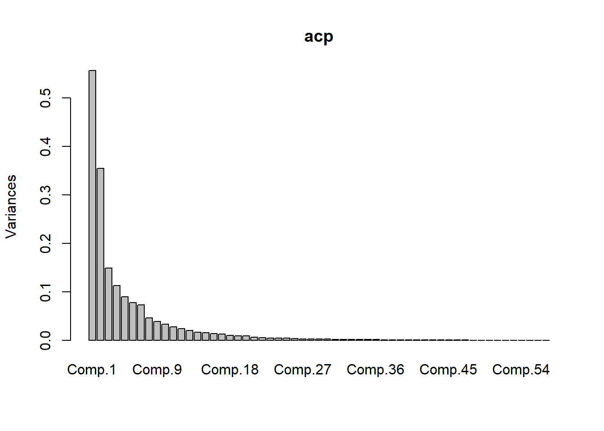
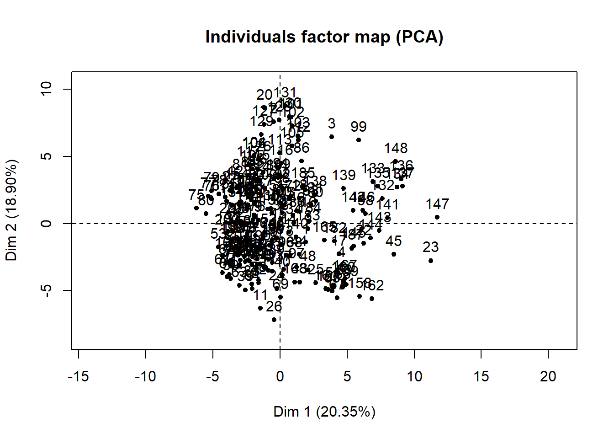
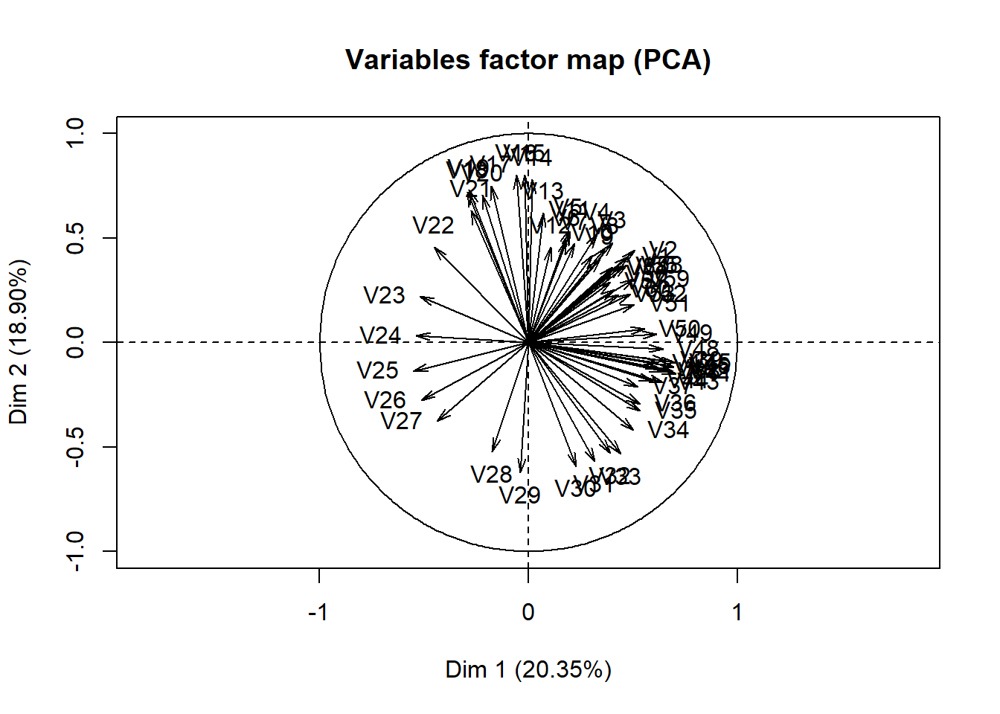
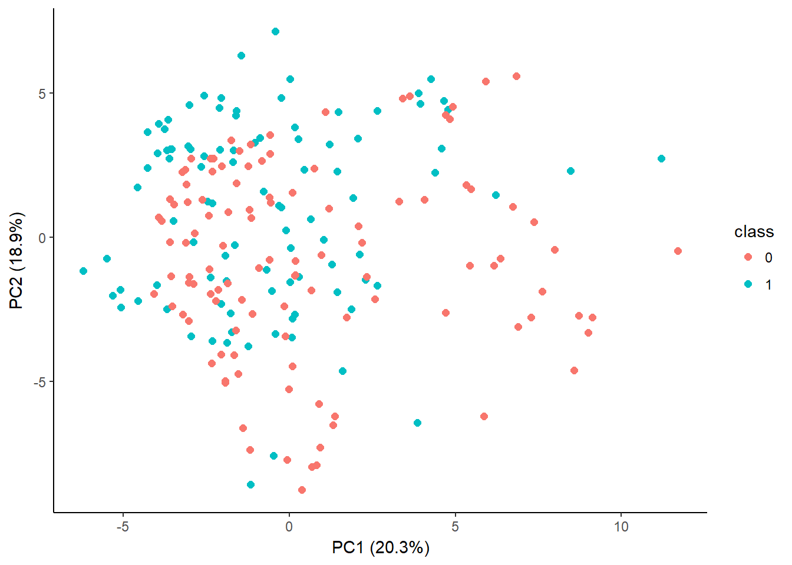

Il s’agit d’un extrait de la formation. Cette formation peut se faire en présentiel ou à distance. Pour en savoir plus, merci de me contacter.
1 Introduction
Dans cette partie, vous allez apprendre les éléments essentiels de l’analyse en composantes principales
théorie et signification
pratique et interprétation des résultats
visualisation des résultats
2 Construction de l’ACP
Contribution des composantes principales

Visualisation basique des résultats

3 Meilleure visualisation

4 Visualisation interactive
Avec cette visualisation interactive, vous pouvez
zoomer pour mieux distinguer certains points d’observation proches
déplacer le plan pour mieux situer les points
visualisation des informations du point en passant le pointeur de souris au-dessus
cliquer sur le point pour avoir le reporting de l’observation (par souci de simplification pour la formation, un seul reporting individuel est créé, donc vous tomberez sur l’observation 8 en cliquant sur n’importe quel point.)